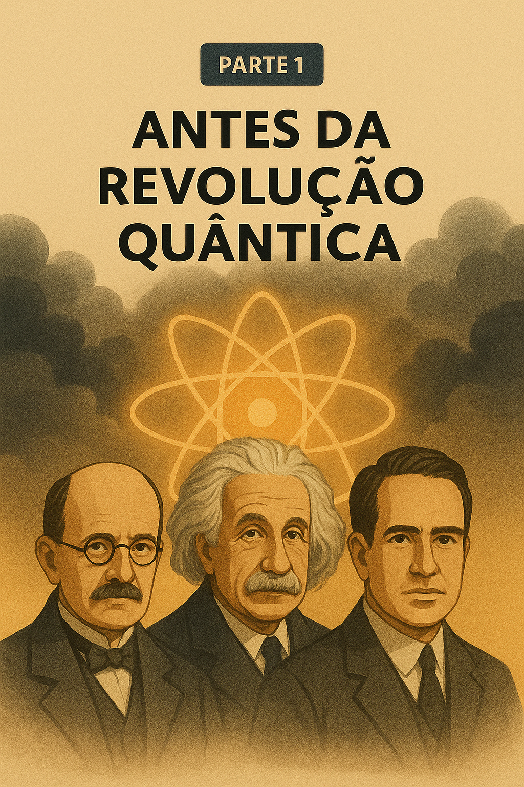
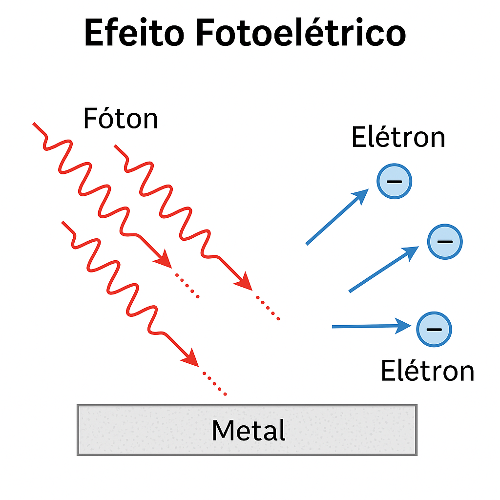
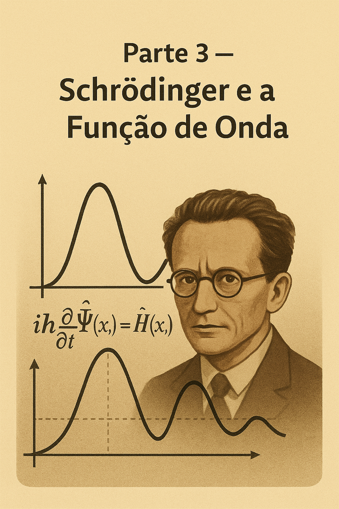
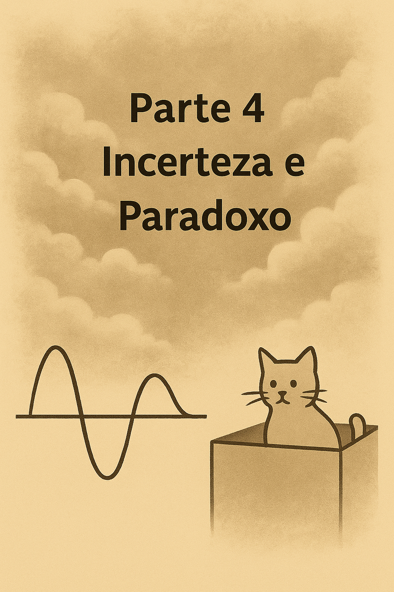
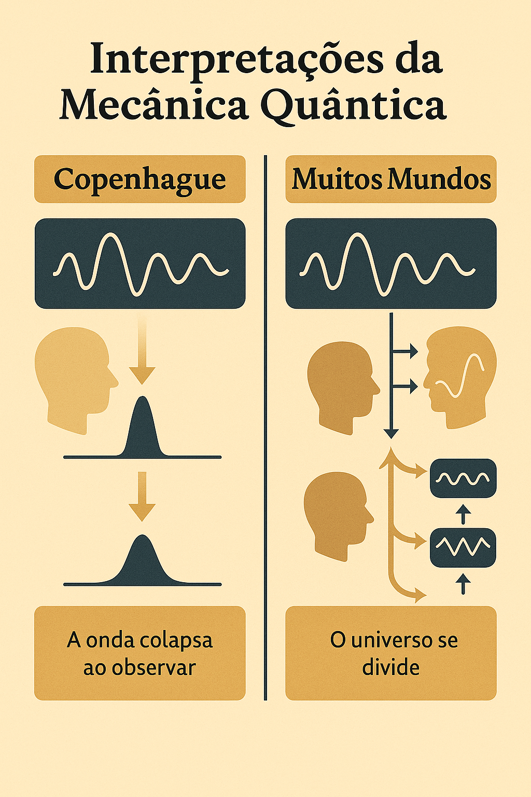
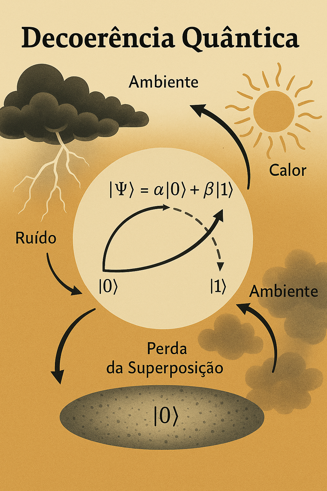
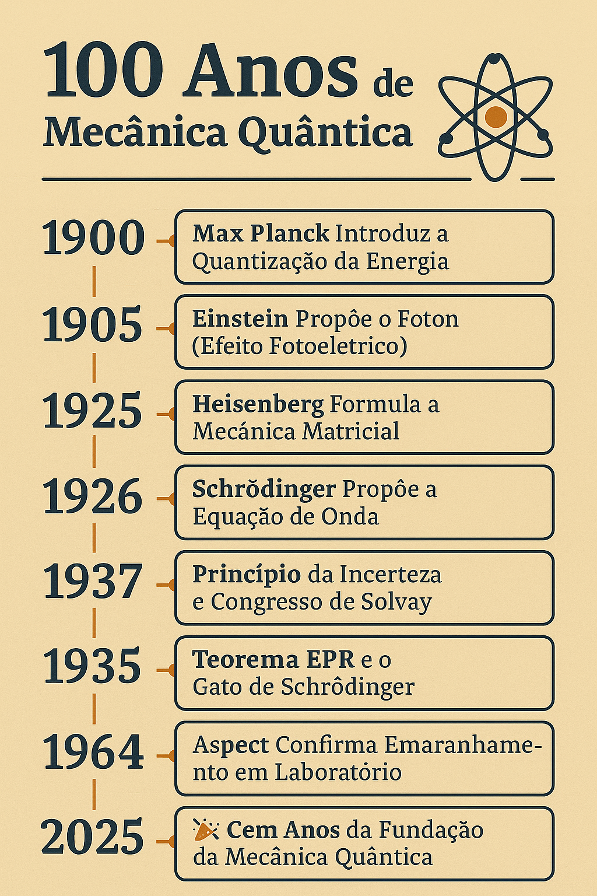
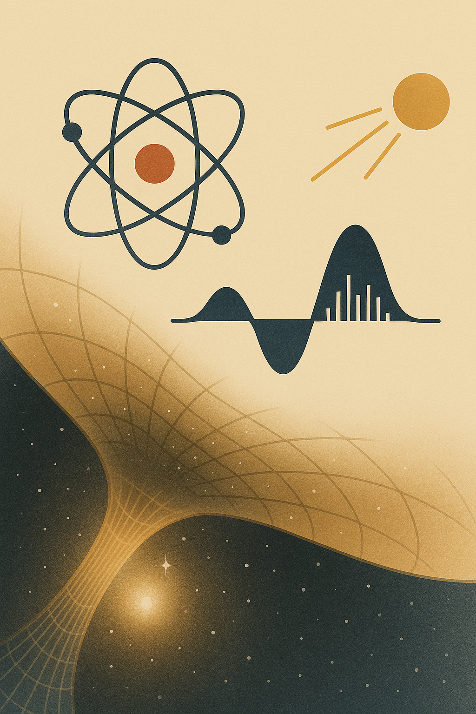

📘 🧬 100 Anos da Mecânica Quântica (1925–2025)
↠Voltar para o Guia de Leitura de FÁsica 🧠⚛ï¸
↠Voltar para a Seção de FÁsica ⚛️
1 📘 🧬 100 Anos da Mecânica Quântica (1925–2025)
Introdução histórica e conceitual sobre os cem anos da teoria quântica.
1.1 Introdução
Em 1925 nascia uma nova fÁsica. Cem anos depois, a mecânica quântica continua sendo uma das teorias mais surpreendentes e fundamentais já concebidas.
Esta série explora sua origem, evolução, paradoxos e aplicações modernas.
1.2 Parte 1 — Antes da Revolução Quântica

1.2.1 📚 O Problema da Luz e da Energia
No final do século XIX, a fÁsica era vista como praticamente completa. Lord Kelvin chegou a afirmar que restavam apenas alguns detalhes a serem ajustados nas equações da fÁsica clássica.
As grandes teorias — mecânica newtoniana, eletromagnetismo de Maxwell e termodinâmica — pareciam descrever o mundo com precisão. Mas surgiram três anomalias experimentais que abalaram essa confiança:
1.2.1.1 🔥 A Catástrofe do Ultravioleta
A radiação emitida por um corpo negro — um objeto ideal que absorve toda radiação incidente — seguia um padrão bem comportado nas baixas frequências, mas as previsões da fÁsica clássica explodiam nas frequências altas:
- A teoria de Rayleigh-Jeans previa que a energia irradiada crescia indefinidamente com a frequência;
- Isso levava a um resultado absurdo: energia infinita para qualquer corpo quente!
Esse impasse ficou conhecido como a catástrofe do ultravioleta.

➡️ Max Planck (1900) resolveu o impasse com uma ideia radical:
A energia não é emitida de forma contÁnua, mas em pacotes discretos, chamados quanta.
A fórmula proposta foi: \[
E = h \nu
\] Onde:
\(h \approx 6{,}626 \times 10^{-34}\ \text{J}\cdot\text{s}\) é a constante de Planck;
\(\nu\) é a frequência da radiação.
🔠Essa proposta marcou o inÁcio da quantização da energia, um conceito estranho à fÁsica clássica.
1.2.1.2 ⚡ O Efeito Fotoelétrico
Outro fenômeno inexplicável era o da emissão de elétrons por certos metais quando iluminados por luz.
- A fÁsica clássica previa que aumentar a intensidade da luz sempre causaria emissão de elétrons;
- No entanto, observava-se que sem uma frequência mÁnima, nenhum elétron era emitido, independentemente da intensidade!
➡️ Albert Einstein (1905) propôs que a luz era composta de partÁculas — os fótons — com energia também dada por \(E = h\nu\).
Apenas fótons com energia suficiente (frequência alta) conseguiam ejetar elétrons.
💡 Essa explicação, baseada em quanta de luz, confirmou a quantização da radiação.
Einstein ganhou o Prêmio Nobel em 1921 por esse trabalho.

Fótons (ondas vermelhas) atingem uma superfÁcie metálica e provocam a ejeção de elétrons.
1.2.1.3 🌌 O Átomo de Bohr
O espectro de emissão do hidrogênio apresentava linhas discretas — como se os elétrons só pudessem ocupar certos nÁveis de energia.
➡️ Niels Bohr (1913) propôs um modelo atômico onde os elétrons:
Orbitam o núcleo em nÁveis quantizados de energia;
Só emitem ou absorvem luz ao saltarem entre esses nÁveis.
Essa teoria explicava porque apenas certas frequências apareciam nos espectros:
\[ \Delta E = E_2 - E_1 = h\nu \]
📌 A teoria de Bohr unia os conceitos de quantização à estrutura atômica — outro golpe na fÁsica clássica.

O elétron salta do segundo para o primeiro nÁvel de energia, emitindo um fóton (seta roxa).
1.2.2 🧨 Um Sistema em Crise
Esses três fenômenos — corpo negro, efeito fotoelétrico e espectros atômicos — desafiaram profundamente a fÁsica tradicional:
- A luz se comportava como partÁcula;
- A energia vinha em quantidades discretas;
- Os átomos tinham estruturas “quantizadas”.
🧩 A consistência entre essas ideias e os experimentos apontava para uma nova realidade fÁsica.
E ela finalmente surgiria em 1925, rompendo com séculos de intuições clássicas.
Com contribuições decisivas de Heisenberg, Schrödinger, Born, Dirac e outros, nascia a Mecânica Quântica — uma revolução cientÁfica tão profunda quanto a de Copérnico e Newton.
A partir dali, compreender o átomo significava repensar a realidade.
1.3 Parte 2 — A Revolução Começa (1925)

1.3.1 ⚛️ Heisenberg e a Mecânica Matricial
No verão de 1925, Werner Heisenberg, então com apenas 23 anos, apresentou uma nova abordagem radical à descrição dos átomos. Ele decidiu:
🔠“A fÁsica deve se basear apenas no que pode ser observado diretamente.”
Ao invés de tentar visualizar órbitas eletrônicas — como fazia o modelo de Bohr — Heisenberg focou em valores mensuráveis, como frequências e intensidades dos espectros de emissão.
🧠Com o apoio de Max Born e Pascual Jordan, Heisenberg desenvolveu uma nova formulação matemática:
a Mecânica Matricial, onde as grandezas fÁsicas são representadas por matrizes — estruturas que, ao serem multiplicadas, podem não obedecer a comutatividade:
\[ \hat{A} \hat{B} \neq \hat{B} \hat{A} \]
âš ï¸ Isso foi chocante: no mundo quântico, a ordem das operações importa!
1.3.2 🔄 Consequências FÁsicas
Esse comportamento não comutativo antecipava um dos pilares da fÁsica quântica:
o PrincÁpio da Incerteza, formulado por Heisenberg dois anos depois (em 1927).
💡 Em vez de trajetórias bem definidas, a nova teoria previa probabilidades de transição entre estados — um mundo mais incerto, porém mensurável.
1.3.3 📌 Um Novo Paradigma
A proposta era ousada, abstrata e inicialmente difÁcil de aceitar.
Mas ela reproduzia com sucesso os espectros dos átomos e estava de acordo com os dados experimentais.
🌟 Em 1925, a Mecânica Quântica nascia formalmente — inaugurando uma era onde o comportamento das partÁculas seria descrito por estruturas matemáticas não clássicas.
1.4 🧮 Observáveis e a Mecânica Matricial
1.4.1 🔠O que são observáveis?
Na mecânica quântica, observáveis são quantidades fÁsicas mensuráveis de um sistema, como:
- posição (\(x\)),
- momento (\(p\)),
- energia (\(E\)),
- spin,
- momento angular,
- número de partÁculas, etc.
Na fÁsica clássica, cada observável é um número real que pode ser medido com precisão — por exemplo, um corpo tem massa \(m = 2{,}0\,\mathrm{kg}\) e posição \(x = 1{,}5\,\mathrm{m}\).
Na fÁsica quântica, cada observável é representado por um operador matemático (ou uma matriz, no caso da mecânica matricial), e a medição não retorna um valor fixo, mas um resultado probabilÁstico.
1.4.2 🧠A proposta de Heisenberg
Werner Heisenberg propôs abandonar completamente qualquer tentativa de descrever trajetórias ou imaginar o que “está acontecendo por trás†das medições.
Ele decidiu basear a teoria somente nas quantidades que podem ser observadas experimentalmente: transições entre nÁveis de energia.
Essas transições podem ser descritas por frequências \(\omega_{mn}\), associadas à emissão ou absorção de fótons quando o sistema passa do estado \(m\) para o estado \(n\).
1.4.3 📠As matrizes entram em cena
Ao tentar organizar essas transições, Max Born percebeu que os valores associados aos observáveis formavam tabelas de números com duas entradas: de um estado \(m\) para outro \(n\).
Essas tabelas tinham a estrutura de matrizes: um observável se torna uma matriz \(\hat{A} = [A_{mn}]\), onde cada elemento representa a “ligação†entre dois estados quânticos.
Essas matrizes obedecem a regras de multiplicação não comutativa, ou seja:
\[ \hat{A}\hat{B} \neq \hat{B}\hat{A} \]
Essa propriedade incomum reflete uma caracterÁstica fundamental do mundo quântico.
1.4.4 🔄 Exemplo: posição e momento
Na mecânica clássica, posição \(x\) e momento \(p\) são grandezas independentes.
Mas na mecânica quântica, elas estão relacionadas por uma relação de comutação fundamental:
\[ [\hat{x}, \hat{p}] = \hat{x}\hat{p} - \hat{p}\hat{x} = i\hbar \]
Essa relação é a base matemática do PrincÁpio da Incerteza de Heisenberg, que afirma:
Não é possÁvel conhecer com precisão arbitrária ao mesmo tempo a posição e o momento de uma partÁcula.
1.4.5 🧠Impacto da mecânica matricial
A mecânica matricial foi:
- A primeira formulação matemática coerente da mecânica quântica;
- Completamente diferente da mecânica clássica;
- Capaz de prever com sucesso espectros atômicos e transições de energia;
- Inicialmente considerada estranha e abstrata — até Schrödinger mostrar que sua mecânica ondulatória era equivalente.
1.4.6 📊 Quadro-Resumo: Observáveis Clássicos vs. Quânticos
| Conceito | Mecânica Clássica | Mecânica Quântica |
|---|---|---|
| Observáveis | Números reais | Operadores (ou matrizes) |
| Medição | DeterminÁstica | ProbabilÁstica |
| Comutatividade | \(AB = BA\) | \(\hat{A} \hat{B} \neq \hat{B} \hat{A}\) |
| Trajetórias | Bem definidas | Não definidas; só probabilidades |
| Exemplos | \(x, p, E\) | \(\hat{x}, \hat{p}, \hat{H}\) |
1.4.7 🧠Conclusão
A mecânica matricial introduziu a ideia de que a realidade microscópica não é determinÁstica, mas probabilÁstica e regida por relações algébricas não comutativas entre observáveis.
Essa abordagem foi essencial para o surgimento do formalismo moderno da Mecânica Quântica, usado até hoje na fÁsica de partÁculas, quÁmica quântica e tecnologias emergentes como a computação quântica.
1.5 Parte 3 — Schrödinger e a Função de Onda

1.5.1 🌊 A Equação de Schrödinger
Em 1926, Erwin Schrödinger propôs uma nova abordagem para descrever o comportamento das partÁculas no mundo microscópico — usando equações diferenciais inspiradas na teoria de ondas.
A equação que leva seu nome é um dos pilares da Mecânica Quântica:
\[ i\hbar \frac{\partial}{\partial t} \Psi(x, t) = \hat{H} \Psi(x, t) \]
Onde:
- \(i\) é a unidade imaginária;
- \(\hbar\) é a constante de Planck reduzida (\(\hbar = \frac{h}{2\pi}\));
- \(\Psi(x, t)\) é a função de onda da partÁcula;
- \(\hat{H}\) é o operador hamiltoniano (energia total do sistema).
1.5.2 ⚙️ O que é o operador \(\hat{H}\)?
O Hamiltoniano \(\hat{H}\) é o operador que representa a energia total de um sistema quântico.
Na equação de Schrödinger:
\[ i\hbar \frac{\partial}{\partial t} \Psi(x, t) = \hat{H} \Psi(x, t) \]
o operador \(\hat{H}\) governa a evolução temporal da função de onda \(\Psi(x, t)\). Ele atua sobre a função de onda como uma instrução: diz como o estado do sistema muda com o tempo.
1.5.3 🔬 Interpretação fÁsica
- \(\hat{H}\) representa a soma da energia cinética e da energia potencial da partÁcula (ou sistema de partÁculas);
- Ao aplicá-lo sobre \(\Psi\), ele “extrai†a informação sobre o conteúdo energético do estado quântico;
- Seus autovalores \(E_n\) são os nÁveis de energia possÁveis do sistema:
\[ \hat{H} \Psi_n = E_n \Psi_n \]
Essa equação é chamada de equação de Schrödinger independente do tempo (ou problema de autovalores do Hamiltoniano).
1.5.4 📠Exemplo clássico: partÁcula em uma dimensão
Para uma partÁcula de massa \(m\) em uma dimensão, sujeita a um potencial \(V(x)\), o Hamiltoniano é:
\[ \hat{H} = -\frac{\hbar^2}{2m} \frac{d^2}{dx^2} + V(x) \]
- O primeiro termo representa a energia cinética (com o operador de momento \(\hat{p} = -i\hbar \frac{d}{dx}\));
- O segundo termo, \(V(x)\), é a energia potencial.
1.5.5 🧠Papel fundamental na teoria
- O Hamiltoniano é o gerador da evolução temporal;
- Ele é essencial na formulação de sistemas ligados (como o átomo de hidrogênio), sistemas de muitos corpos, e na mecânica quântica relativÁstica (como na equação de Dirac);
- Também aparece no formalismo de mecânica quântica em espaços de Hilbert, mecânica estatÁstica, e teoria de campos quânticos.
1.5.6 📊 Quadro-resumo: Operador \(\hat{H}\)
| Conceito | Significado |
|---|---|
| \(\hat{H}\) | Operador Hamiltoniano |
| Função | Representa a energia total do sistema |
| Equação | \(\hat{H} \Psi = E \Psi\) (autovalores de energia) |
| Estrutura tÁpica | \(\hat{H} = \hat{T} + \hat{V}\), com cinética + potencial |
| Papel | Gera a evolução temporal do estado quântico |
| Aparece em… | Equação de Schrödinger, teoria quântica, QED etc. |
1.5.7 🧲 Em resumo
O operador \(\hat{H}\) é o coração dinâmico da mecânica quântica.
Ele descreve como o estado de um sistema evolui no tempo e quais são os possÁveis valores de energia que podemos observar.

O operador \(\hat{H}\) gera a evolução temporal do sistema quântico, sendo composto por energia cinética e potencial. Ele aparece no centro da equação de Schrödinger, conduzindo a dinâmica da função de onda.
1.5.8 📌 Interpretação FÁsica
A grande inovação de Schrödinger foi tratar a partÁcula como uma onda de matéria, em vez de um ponto com trajetória bem definida.
A função \(\Psi(x, t)\), embora complexa, contém toda a informação sobre o sistema.
🯠O módulo ao quadrado da função de onda, \(|\Psi(x, t)|^2\), representa a densidade de probabilidade de encontrar a partÁcula na posição \(x\) no tempo \(t\).
Essa interpretação probabilÁstica marcou uma ruptura com o determinismo clássico.
1.5.9 🔄 Dois Caminhos, Mesmo Destino
Ao mesmo tempo, a mecânica matricial de Heisenberg e a mecânica ondulatória de Schrödinger pareciam propostas muito diferentes:
- Heisenberg trabalhava com matrizes abstratas e observáveis;
- Schrödinger descrevia ondas que evoluem no espaço-tempo.
💡 Mas logo se provou que ambas as abordagens eram equivalentes — apenas diferentes linguagens matemáticas para descrever os mesmos fenômenos fÁsicos.
1.5.10 📈 Um Novo Universo
Com a equação de Schrödinger, tornou-se possÁvel prever o comportamento de sistemas quânticos complexos:
- Átomos com múltiplos elétrons;
- Moléculas;
- Estados ligados e energia quantizada.
🔬 Essa formulação permitiu um avanço gigantesco na compreensão da matéria — e abriu caminho para tecnologias como semicondutores, lasers e a própria computação quântica.

A função \(\Psi(x, t)\) pode assumir valores complexos, mas seu módulo ao quadrado, \(|\Psi(x, t)|^2\), fornece a densidade de probabilidade de encontrar a partÁcula.
1.6 Parte 4 — Incerteza e Paradoxo

1.6.1 🔄 O PrincÁpio da Incerteza
Em 1927, Werner Heisenberg apresentou uma das ideias mais revolucionárias da fÁsica moderna: o PrincÁpio da Incerteza.
\[ \Delta x \cdot \Delta p \geq \frac{\hbar}{2} \]
Isso significa que quanto mais precisamente conhecemos a posição (\(\Delta x\)) de uma partÁcula, menos sabemos sobre seu momento (\(\Delta p\)) — e vice-versa.
âš ï¸ Essa incerteza não é uma falha dos instrumentos, mas uma limitação fundamental da natureza.
1.6.2 🯠O que isso muda?
Na fÁsica clássica, podemos, em princÁpio, medir tudo com precisão infinita.
Mas no mundo quântico, a própria ideia de “saber tudo sobre uma partÁcula†deixa de fazer sentido.
🔠A incerteza não é um defeito da teoria, mas uma consequência da estrutura matemática da mecânica quântica — ligada à não comutatividade dos observáveis:
\[ [\hat{x}, \hat{p}] = i\hbar \]
1.6.3 🱠O Gato de Schrödinger
Em 1935, Erwin Schrödinger propôs um experimento mental para ilustrar os problemas conceituais da mecânica quântica: o famoso Gato de Schrödinger.
Imagine um gato trancado em uma caixa com um mecanismo que depende do decaimento de um átomo radioativo (evento quântico aleatório).
Se o átomo decair, o veneno é liberado e o gato morre. Caso contrário, o gato vive.
1.6.4 ❓ O paradoxo
Segundo a interpretação quântica mais comum (Copenhague), enquanto a caixa estiver fechada, o sistema está em superposição de dois estados:
- gato vivo
- gato morto
🧩 Só quando se abre a caixa e observa, o estado colapsa para uma das possibilidades.
1.6.5 💬 Reflexões profundas
Esse paradoxo levanta questões fundamentais:
- A função de onda descreve a realidade ou apenas o nosso conhecimento?
- O observador tem um papel ativo na definição da realidade?
- Existe uma realidade objetiva antes da medição?
Essas perguntas permanecem no coração das interpretações da mecânica quântica até hoje.

Enquanto a caixa está fechada, o gato está em um estado de superposição: vivo e morto ao mesmo tempo, até que haja uma observação.
1.7 Parte 5 — Interpretações e Emaranhamento


À esquerda, a interpretação de Copenhague: a função de onda colapsa ao observar.
À direita, a interpretação dos Muitos Mundos: cada possibilidade gera um universo paralelo.
1.7.1 🏛️ Copenhague vs. Muitos Mundos
Desde o surgimento da Mecânica Quântica, uma questão crucial permanece:
O que exatamente significa a função de onda?
A equação de Schrödinger prevê como \(\Psi(x,t)\) evolui.
Mas o que acontece quando se faz uma medida?
Duas grandes escolas de pensamento surgiram para tentar responder:
1.7.1.1 🏛️ Interpretação de Copenhague
Formulada por Bohr e Heisenberg, é a mais tradicional.
- A função de onda representa o nosso conhecimento sobre o sistema;
- O colapso da função de onda ocorre no momento da medição;
- Antes disso, o sistema está em superposição de estados.
🧩 A realidade, portanto, não está definida até que seja observada.
Essa interpretação funciona muito bem na prática, mas levanta perguntas filosóficas profundas:
O que conta como “medição� O observador altera a realidade?
1.7.1.2 🌌 Interpretação de Muitos Mundos (Everett, 1957)
Hugh Everett III propôs uma ideia radical:
> A função de onda nunca colapsa.
Em vez disso:
- Todos os resultados acontecem simultaneamente;
- O universo se ramifica em múltiplas realidades, uma para cada possibilidade.
➡️ Cada vez que ocorre uma medição, o observador “se divide†junto com o universo.
Essa interpretação elimina o colapso — mas ao custo de admitir uma infinidade de universos paralelos.
1.7.2 🧲 Emaranhamento Quântico
O fenômeno do emaranhamento ocorre quando duas partÁculas quânticas compartilham um estado comum, mesmo que estejam separadas por grandes distâncias.
- Medir uma partÁcula afeta instantaneamente a outra, não importa o quão longe esteja.
Einstein rejeitou essa ideia, chamando-a de
“ação fantasmagórica à distância†(spooky action at a distance).
1.7.3 🧪 Testes e Evidências
A teoria foi colocada à prova:
Em 1964, John Bell formulou um teorema com desigualdades testáveis:
➡️ Se a mecânica quântica estiver correta, certas correlações violam as leis clássicas.Em 1982, Alain Aspect conduziu experimentos que confirmaram as previsões quânticas — violando as desigualdades de Bell.
📌 Resultado: o emaranhamento é real, e não pode ser explicado por teorias com variáveis ocultas locais.
1.8 🧩 O que são Variáveis Ocultas Locais?
A hipótese das variáveis ocultas propõe que a mecânica quântica não seria uma teoria completa, mas sim uma descrição estatÁstica de fenômenos mais profundos. A ideia é que existiriam valores ocultos — que determinariam os resultados das medições, mesmo que não os conheçamos.
1.8.1 📠O que significa “local�
Localidade implica que nada pode influenciar algo a distância mais rápido que a luz — uma exigência da relatividade de Einstein.
Se duas partÁculas estão separadas por grandes distâncias, uma medição em uma não pode afetar a outra instantaneamente.
1.8.2 🧠O Paradoxo EPR (1935)
Einstein, Podolsky e Rosen argumentaram:
- A mecânica quântica permite correlações entre partÁculas separadas — o emaranhamento;
- Mas isso viola a localidade, a menos que existam variáveis ocultas para explicar o fenômeno;
- Logo, a teoria quântica seria incompleta.
1.8.3 📠Teorema de Bell (1964)
John Bell mostrou que:
- Se existirem variáveis ocultas locais, certas desigualdades matemáticas devem ser respeitadas;
- A mecânica quântica prevê a violação dessas desigualdades.
1.8.4 🧪 Experimentos
- Em 1982, Alain Aspect confirmou que as desigualdades de Bell são violadas;
- Outros experimentos mais recentes eliminaram brechas técnicas;
- Resultado: o universo não obedece a variáveis ocultas locais.
1.8.5 📌 Conclusão
A mecânica quântica é:
- Não-local (partÁculas emaranhadas compartilham informação além do espaço-tempo clássico);
- IndeterminÁstica (resultados não são determinados por “propriedades escondidas”);
- Uma teoria fundamentalmente diferente da visão clássica de Einstein.
A realidade quântica não está definida até ser medida, e não pode ser explicada por mecanismos ocultos locais.
1.8.6 🔠Aplicações Modernas
O emaranhamento deixou de ser apenas um paradoxo filosófico.
Hoje, ele é a base para tecnologias quânticas emergentes:
- Criptografia quântica: comunicação segura usando pares emaranhados;
- Computação quântica: manipulação simultânea de estados usando qubits interligados;
- Teleportação quântica: transmissão de estados quânticos à distância.
🌠O emaranhamento conecta não apenas partÁculas, mas também conceitos de informação, realidade e tecnologia.
1.9 🧩 Qubits: Conceito e Intuição
| Conceito | Descrição |
|---|---|
| Qubit | Unidade de informação quântica (bit quântico) |
| Estados | Pode estar em 0, 1 ou superposição de ambos |
| Superposição | Um qubit pode representar simultaneamente os dois estados |
| Entrelaçamento | Vários qubits podem ficar emaranhados, com estados interdependentes |
| Medida | Ao medir um qubit, ele “colapsa†para 0 ou 1, com certas probabilidades |
1.9.1 💡 Intuição
- Um bit clássico é como um interruptor: ligado (1) ou desligado (0);
- Um qubit é como um ponteiro de bússola que pode apontar para qualquer direção — estado representado na esfera de Bloch.

A esfera de Bloch representa todos os possÁveis estados de um qubit como pontos na superfÁcie de uma esfera unitária. Os estados \(|0⟩\) e \(|1⟩\) ficam nos polos norte e sul, e estados em superposição estão entre eles.
1.10 🌫️ Decoerência Quântica
A decoerência é o processo pelo qual um sistema quântico perde suas propriedades quânticas — como superposição e emaranhamento — ao interagir com o ambiente.
1.10.1 🧠Intuição
Um qubit em superposição: \[ |\Psi\rangle = \alpha|0\rangle + \beta|1\rangle \]
Ao entrar em contato com o ambiente (luz, calor, ruÁdo…), essa superposição se desfaz, e o sistema passa a se comportar como se estivesse em um único estado clássico.
1.10.2 📉 O que causa decoerência?
- Fótons, vibrações, temperatura;
- Qualquer troca de informação com o ambiente;
- Mesmo sem medir diretamente, o ambiente já interfere.
1.10.3 📊 Quadro-resumo
| Conceito | Explicação curta |
|---|---|
| Decoerência | Perda das propriedades quânticas devido à interação com o ambiente |
| Causa | RuÁdo, luz, calor, partÁculas externas |
| Efeito | O sistema se torna clássico: perde superposição e emaranhamento |
| Importância | Explica por que não vemos efeitos quânticos em objetos do cotidiano |
🔠A decoerência conecta o mundo quântico ao mundo clássico — explicando por que um elétron pode estar em dois lugares ao mesmo tempo, mas um gato não.

1.11 Parte 6 — Cem Anos de Quântica

1.11.1 🉠Conquistas Tecnológicas
A Mecânica Quântica, apesar de seus conceitos contraintuitivos, é uma das teorias mais bem-sucedidas da história da ciência. Seu impacto vai muito além da fÁsica teórica:
- Lasers: baseados em transições quânticas estimuladas entre nÁveis de energia;
- GPS: exige correções relativÁsticas e quânticas para funcionar com precisão;
- Chips eletrônicos: funcionam graças à mecânica quântica dos semicondutores;
- Ressonância Magnética: usa spin e transições de energia para gerar imagens do corpo;
- LEDs, painéis solares, sensores quânticos, relógios atômicos…
🔬 A teoria da Eletrodinâmica Quântica (QED), formulada por Feynman, Schwinger e Tomonaga, é a mais precisa da história:
> Previsões concordam com experimentos até a 12ª casa decimal.
1.11.2 🧠Mistérios em Aberto
Mesmo com tantos sucessos, a mecânica quântica ainda desafia nossa intuição. Grandes questões permanecem:
🌀 O que causa o colapso da função de onda?
O ato de observar? A decoerência? Algo mais profundo?🌌 Como unificar a gravidade com a mecânica quântica?
A Relatividade Geral e a Mecânica Quântica são as duas grandes colunas da fÁsica moderna — mas ainda não convivem em paz.
A busca por uma Teoria Quântica da Gravidade, como a gravidade quântica em loop ou a Teoria das Cordas, é um dos maiores desafios do século.
1.11.3 🔮 O Futuro da Quântica
Estamos entrando na chamada Segunda Revolução Quântica, onde usamos efeitos quânticos não só para entender, mas para controlar e construir tecnologias:
- Computadores quânticos com centenas ou milhares de qubits;
- Simulação de moléculas complexas, acelerando a descoberta de novos medicamentos;
- Criptografia quântica inviolável, baseada em emaranhamento e teorema de Bell;
- Sensores quânticos ultraprecisos, com aplicações em geologia, medicina, navegação e exploração espacial.
A fÁsica quântica deixou de ser “apenas teoria”: está moldando o futuro da tecnologia e do conhecimento humano.
1.11.4 📜 Linha do Tempo da Mecânica Quântica
| Ano | Marco |
|---|---|
| 1900 | Max Planck introduz a quantização da energia |
| 1905 | Einstein propõe o fóton (efeito fotoelétrico) |
| 1925 | Heisenberg formula a mecânica matricial |
| 1926 | Schrödinger propõe a equação de onda |
| 1927 | PrincÁpio da Incerteza e Congresso de Solvay |
| 1935 | Paradoxo EPR e o Gato de Schrödinger |
| 1964 | Teorema de Bell e limites do realismo local |
| 1982 | Aspect confirma o emaranhamento em laboratório |
| 2025 | 🉠Cem anos da fundação da Mecânica Quântica |

Uma jornada de descobertas — da quantização de Planck ao emaranhamento de Aspect.
🉠A fÁsica quântica completa um século de revolução cientÁfica!
1.12 🔚 Conclusão
A Mecânica Quântica não é apenas uma teoria sobre o muito pequeno — sobre átomos, partÁculas e experimentos de laboratório.
Ela é, na verdade, uma nova forma de ver o mundo.
Durante o último século, ela abriu janelas para realidades que desafiam o senso comum:
- Um elétron pode estar em vários lugares ao mesmo tempo;
- Medir algo muda aquilo que é medido;
- PartÁculas distantes podem estar emaranhadas, agindo como se fossem uma só;
- E, mesmo assim, tudo funciona com precisão quase absoluta.
🔬 A Mecânica Quântica é ao mesmo tempo matematicamente rigorosa e filosoficamente inquietante.
Ela revelou que há limites para o que podemos saber, e que a natureza, em seu nÁvel mais fundamental, não é feita de certezas, mas de probabilidades, amplitudes e interações sutis.
Mais do que isso: ela se tornou uma ferramenta essencial para o progresso humano.
Está nos lasers, nos computadores, nos satélites e até nos teclados e telas com os quais você está lendo este texto.
“O verdadeiro mistério do mundo não é o invisÁvel.
É o visÁvel que nos parece tão estranho quando olhado de perto.”
🔠Cem anos depois, a Mecânica Quântica continua nos ensinando a ver o familiar com novos olhos — e a entender que, no fundo, a realidade é mais estranha, bela e profunda do que jamais imaginamos.

A onda, o átomo, o fóton e a curvatura do espaço-tempo —
representações simbólicas de um século de descobertas quânticas que transformaram nossa visão do universo.
2 📘 Aprofundamento
Quer se aprofundar na série?
👉 Acesse a série completa dos 100 anos da Mecânica Quântica
↠Voltar para o Guia de Leitura de FÁsica 🧠⚛ï¸
↠Voltar para a Seção de FÁsica ⚛️
🔠Voltar ao Topo
Blog do Marcellini — Explorando a FÁsica com Rigor e Beleza.
Criado por Blog do Marcellini com ❤️ e código.
3 🔗 Links Úteis
- 🧑‍🏫 Sobre o Blog
- 💻 GitHub do Projeto
- 📬 Contato por E-mail